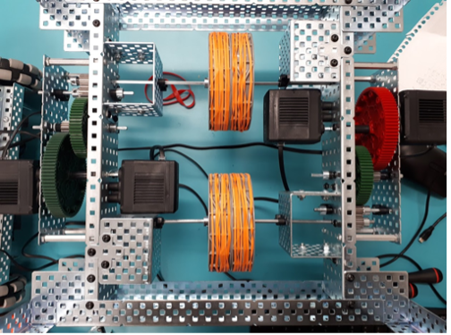
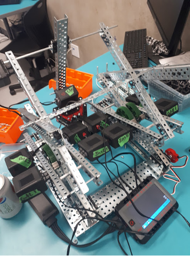
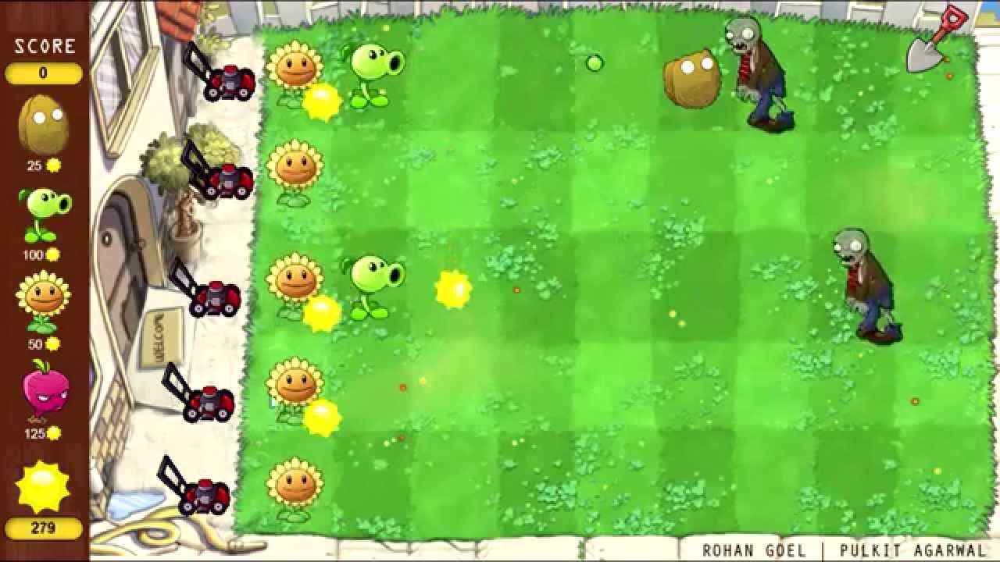
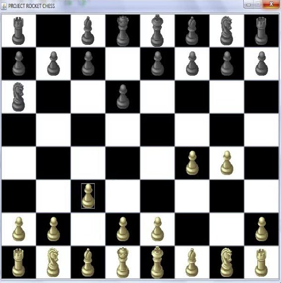
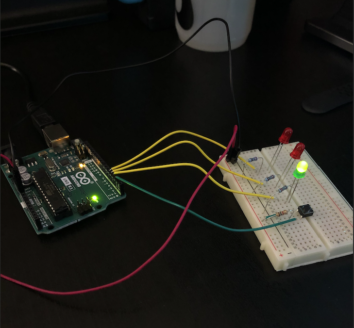
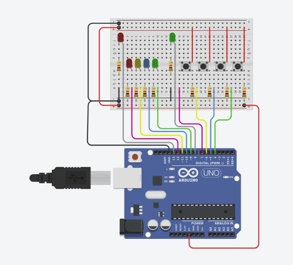
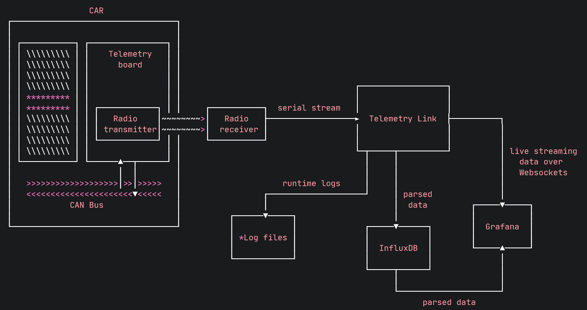

|  | Flywheel with Vex roboticsDate: Mar 2021 - May 2021 - Senior Year of Highschool In my senior year of high-school, I worked with a team to make a fly-wheel robot that would launch a tennis ball into a recycling bin at a preset distance of our choice. We did this project to deepen our understanding of mathematical and physics related concepts such as parabolas and projectile motion. I did all of the programming for this project which included lots of math and distance sensors, and developing and constructing the mechanical design. This was a two month long project that taught me technical skills and also a great deal about teamwork, collaboration, prototyping, and patience. |
|  | Scissor Lift with Vex roboticsDate: May 2021 - June 2021 - Senior Year of Highschool In my senior year of high-school, I worked with the same team as the previous to make a scissor-lift robot that could pick up small objects using a remote controller. This project only took about a month. |
|  | Plants Vs Zombies RecreationDate: May 2021 - June 2021 - Senior Year of Highschool In my senior year of high-school, I took AP Computer Science. As a final project I decided to recreate the plants vs zombies game using java and greenfoot. I added my own characters with their own new abilities such as a sumo wrestler-plant that would push back zombies. I also added "Scorpion" from Mortal Kombat who would teleport to the row with the most zombies and throw kunai at them. |
|  | Chess Game Using JframesDate: June 2021 After completing AP computer science, I decided to continue my coding journey on my own and recreated chess with Java using the jframe library. This took me a few weeks to complete. |
|  | Arduino ProjectsDate: June 2022 - July 2022 After completing APSC 160, I felt inspired to continue learning more about electronics and bought my own Arduino starter kit. The picture you see to the left was my very first arduino project that wasn't on tinkercad. I then proceeded to complete the rest of the "Starter Kit Project Book", which included temperature sensors, a motorized pinwheel, a knock lock, and much more. |
|  | Simon SaysDate: July 2022 After completing the "Arduino Starter Kit Project Book", I wanted to challenge myself by recreating a game I played a lot as a kid. I first designed the game using Tinkercad. This game took me a number of days to complete. |
|  | UBC Solar Telemetry Test cases for parserDate: Winter 2022 Used the pytest module as a test framework to test the parsing of each parsable CAN ID. |